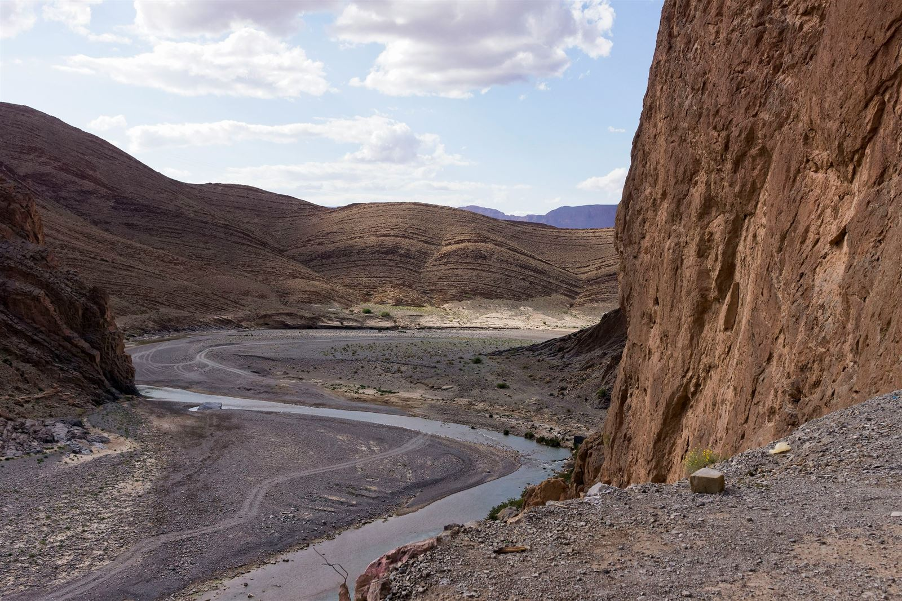
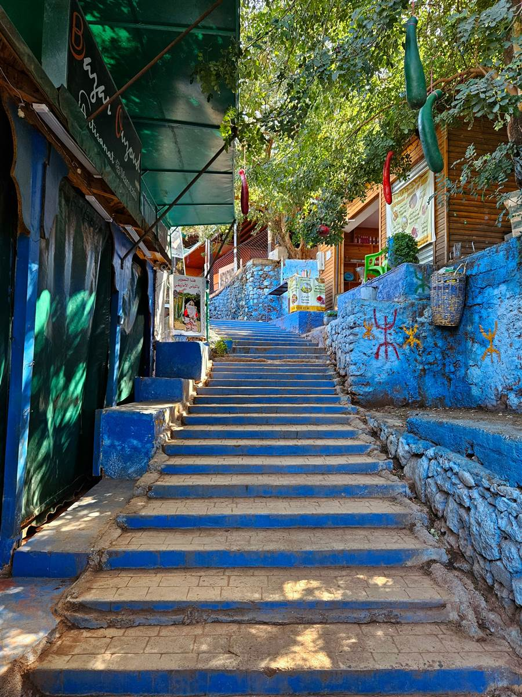
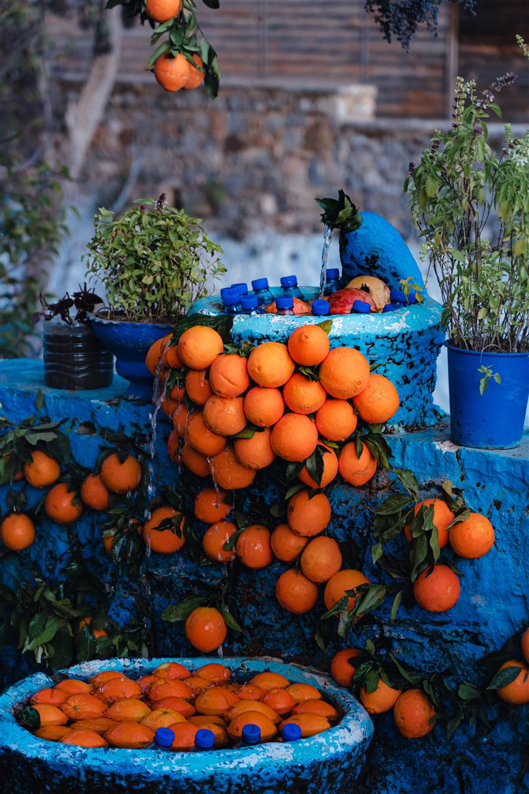
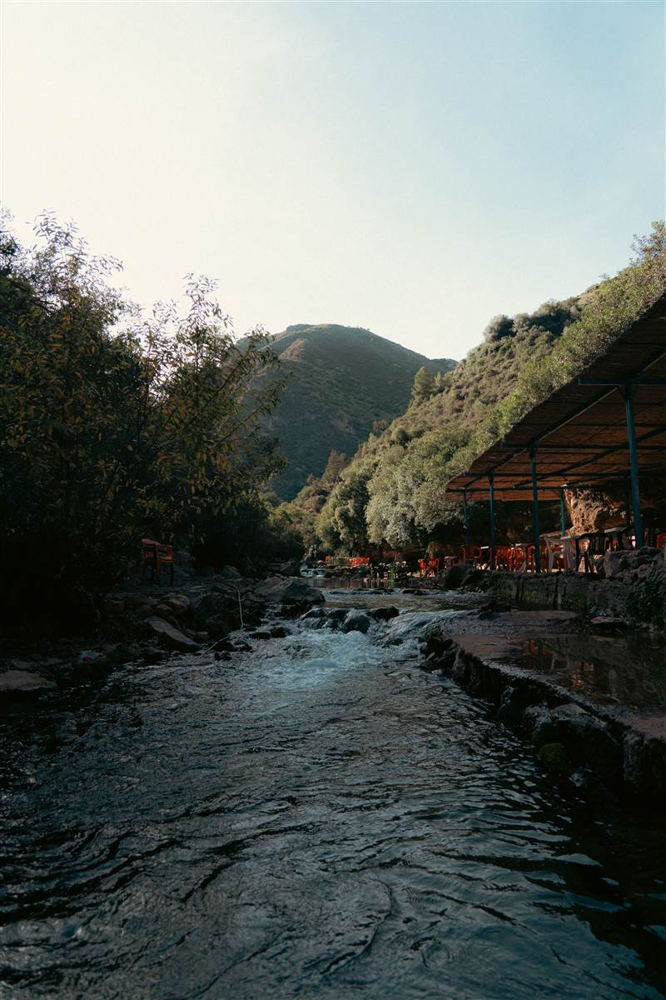
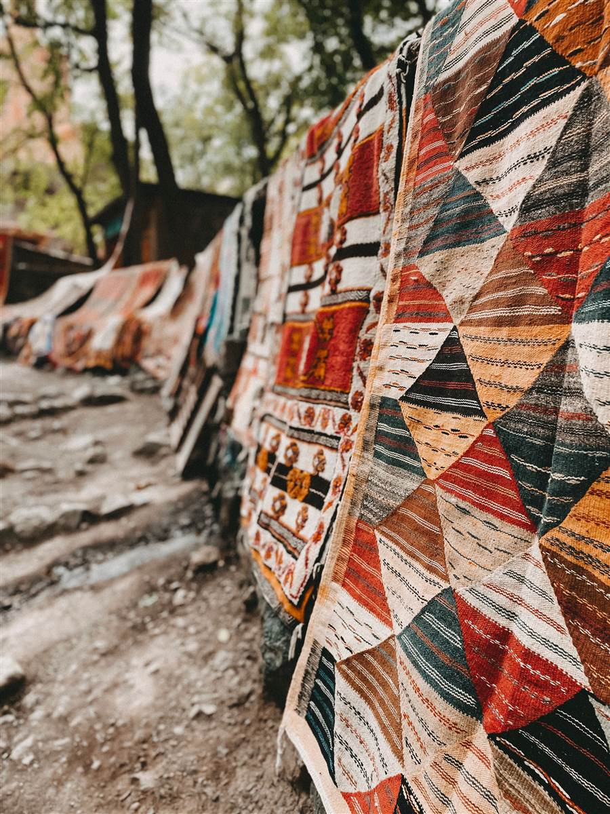

Ourika: Waterfalls Near Marrakech
Green valley, waterfalls and riverside tagines — Ourika is the Atlas day trip every Marrakech traveller should take.

The Atlas in a day
No other Atlas valley is this close to Marrakech: an hour's drive climbs from the red city into walnut groves, Berber villages and the waterfalls of Setti Fatma. Restaurants line the river on platforms over the water — lunch with your feet nearly in the stream is the local ritual.
Ourika suits anyone short on mountain days — pair it with Imlil for a two-valley stay, or take it as the classic day trip inside any Marrakech-based itinerary. Our Atlas & Ourika day trip runs it privately with lunch included.
Highlights
- Setti Fatma waterfalls — the climb past seven cascades.
- Berber villages — riverside hamlets and walnut groves.
- Riverside lunch — tagine on platforms over the water.
- Ourika souk — the weekly market when days align.
- Valley viewpoints — the Atlas wall rising behind.
Good to know
How to get there
The valley runs about an hour southeast of Marrakech by road, served by grand taxis and buses. With Abrid, your private driver-guide handles the drive, the falls walk and lunch in one day.
How long to stay
We recommend one full day from Marrakech. Overnights suit travellers pairing Ourika with Imlil.
Best time to visit
Spring brings full waterfalls and green terraces; the valley works year-round, with summer heat softened by altitude and shade.
Ourika experiences
Best areas to visit in Ourika
Falls village, riverside stretch and valley viewpoints.
Setti Fatma
Seven cascades above the village — the valley's headline walk.
Restaurant stretch
Tagines on platforms over the water along the lower valley.
Upper road
Pull-offs facing the Atlas wall on the climb to the falls.
Trips visiting Ourika
Morocco guides
Ourika questions
Is Ourika worth a day trip from Marrakech?
Yes — it is the closest real Atlas valley to the city, with waterfalls, villages and riverside lunch in a single easy day. Our most-booked day trip for good reason.
How hard is the waterfall walk?
Moderate — rocky paths and some scrambling past the first falls. Reasonable fitness is enough; your guide sets the pace and turn-around point.
Ourika or Imlil for one Atlas day?
Ourika for waterfalls and an easy day; Imlil for higher mountains and Toubkal views. Ask us and we match the valley to your fitness. Ask here.
Ourika in photos
Real shots from our routes around Ourika. All photos from the Abrid Morocco local library.




Want to include Ourika in your Morocco trip?
Tell us your dates — we add the Ourika day trip to any Marrakech stay with transport, guide and lunch handled.
Plan My Morocco Trip Explore Trips